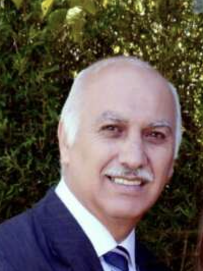

Nuestro nombre está inspirado en Juan 1:14, donde Jesucristo es presentado como lleno de gracia y de verdad. Queremos que estas dos realidades marquen nuestra vida como iglesia: permanecer fieles a la verdad de la Palabra y amar a las personas con la gracia que hemos recibido en Cristo. Our name is inspired by John 1:14, where Jesus Christ is presented as full of grace and truth. We want these two realities to mark our life as a church: remaining faithful to the truth of the Word and loving people with the grace we have received in Christ.
Somos una familia de discípulos que vive bajo la autoridad de las Escrituras, aprendiendo a vivir y compartir el Evangelio. We are a family of disciples who live under the authority of Scripture, learning to live out and share the Gospel.
Ser una comunidad que capacite y desarrolle discípulos que impacten de manera local y global con el Evangelio. To be a community that equips and develops disciples who impact their community and the world with the Gospel.
Pastor principalLead Pastor
Esteban Rojas fue plantador de Iglesia Gracia y Verdad y actualmente sirve como pastor principal, enfocado principalmente en la predicación de la Palabra y en el desarrollo de la visión doctrinal y ministerial de la iglesia. Además, sirve como instructor de Simeon Trust para Latinoamérica y como encargado de Acts 29 en Costa Rica. Esteban Rojas planted Iglesia Gracia y Verdad and now serves as its lead pastor, focused primarily on preaching the Word and developing the church's doctrinal and ministerial vision. He also serves as a Simeon Trust instructor for Latin America and as Acts 29's coordinator for Costa Rica.
Es Licenciado en Comunicación y Mercadeo y también es Licenciado en Teología, graduado del Seminario Bíblico Río Grande, en Texas. Actualmente se encuentra finalizando una Maestría en Divinidad (M.Div.) en The Southern Baptist Theological Seminary. He holds a degree in Communications and Marketing and a degree in Theology from Seminario Bíblico Río Grande in Texas, and is currently completing a Master of Divinity (M.Div.) at The Southern Baptist Theological Seminary.
Leer artículo en Acts 29 → Read the article on Acts 29 →

Familia y ConsejeríaFamily & Counseling
Milton Rojas sirve como pastor de familia y consejería en Iglesia Gracia y Verdad, enfocado principalmente en el acompañamiento pastoral de familias. Cuenta con más de 30 años de experiencia ministerial, durante los cuales ha servido como plantador de iglesias, pastor y consejero bíblico, gran parte de ese tiempo en el ministerio bivocacional. También ha colaborado en iniciativas de fraternidad pastoral en Heredia y en el acompañamiento y consejo de otros pastores. Es Licenciado en Administración de Empresas y posee una Maestría en Orientación Familiar. Milton Rojas serves as pastor of family ministry and counseling at Iglesia Gracia y Verdad, focused primarily on the pastoral care of families. He brings more than 30 years of ministry experience, having served as a church planter, pastor, and biblical counselor, much of it in bivocational ministry. He has also taken part in pastoral fellowship initiatives in Heredia and in mentoring and counseling other pastors. He holds a degree in Business Administration and a Master's degree in Family Counseling.
Vivimos para glorificar a Dios en todo.We live to glorify God in everything.
Nos sometemos a la autoridad de las Escrituras.We submit to the authority of Scripture.
Hacemos discípulos que siguen y obedecen a Jesús.We make disciples who follow and obey Jesus.
Vivimos unidos en amor y cuidado mutuo.We live united in love and mutual care.
Llevamos el Evangelio a nuestra comunidad y participamos en la plantación de iglesias.We bring the Gospel to our community and take part in planting churches.
Adoramos de manera congregacional, sencilla, contemporánea y centrada en Cristo.We worship congregationally — simple, contemporary, and centered on Christ.
Creemos que toda la Biblia es Palabra de Dios. Por eso predicamos expositivamente, recorriendo libros completos de la Biblia para entender su mensaje y aplicarlo fielmente al día de hoy. We believe the whole Bible is God's Word. That's why we preach expositorily, working through entire books of the Bible to understand their message and apply it faithfully to our lives today.
Nuestra alabanza es generalmente contemporánea, pero nuestra prioridad es que las letras sean bíblicas, teológicamente sólidas y centradas en Cristo. Our worship music is generally contemporary, but our priority is that the lyrics are biblical, theologically sound, and centered on Christ.
Como iglesia, la doctrina es parte central de nuestra identidad. Nuestra declaración de fe completa cubre a Dios, las Escrituras, el ser humano, la salvación, la Iglesia y más. As a church, doctrine is central to our identity. Our full statement of faith covers God, Scripture, humanity, salvation, the Church, and more.
Ver toda nuestra declaración de fe See our full statement of faithFormamos parte de Acts 29, una red global de iglesias comprometidas con la plantación de iglesias centradas en el Evangelio.We are part of Acts 29, a global network of churches committed to planting gospel-centered churches.
Colaboramos con Coalición por el Evangelio en iniciativas y eventos para fortalecer a la iglesia y promover recursos bíblicos en el mundo hispano.We collaborate with Coalición por el Evangelio on initiatives and events that strengthen the church and promote biblical resources across the Spanish-speaking world.
Participamos en la capacitación de pastores y líderes en predicación expositiva por medio de Simeon Trust, incluyendo talleres realizados regularmente en Costa Rica.We take part in training pastors and leaders in expository preaching through Simeon Trust, including workshops held regularly in Costa Rica.